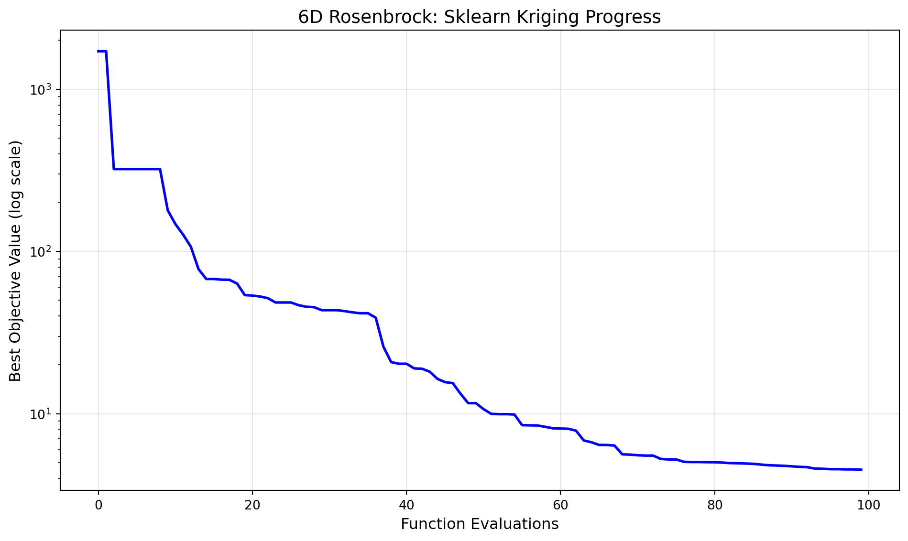
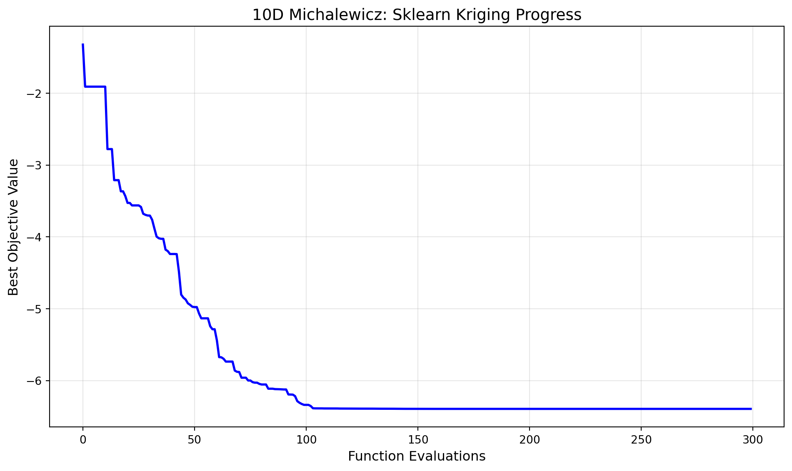

import warnings
warnings.filterwarnings("ignore")
import json
import numpy as np
from spotoptim import SpotOptim
from spotoptim.function import rosenbrock5 Benchmarking SpotOptim with Sklearn Kriging (Matern Kernel) on 6D Rosenbrock and 10D Michalewicz Functions
Note
These test functions were used during the Dagstuhl Seminar 25451 Bayesian Optimisation (Nov 02 – Nov 07, 2025), see here.
This notebook demonstrates the use of SpotOptim with sklearn’s Gaussian Process Regressor as a surrogate model.
5.1 SpotOptim with Sklearn Kriging in 6 Dimensions: Rosenbrock Function
This section demonstrates how to use the SpotOptim class with sklearn’s Gaussian Process Regressor (using Matern kernel) as a surrogate on the 6-dimensional Rosenbrock function. We use a maximum of 100 function evaluations.
5.1.1 Define the 6D Rosenbrock Function
dim = 6
lower = np.full(dim, -2.0)
upper = np.full(dim, 2.0)
bounds = list(zip(lower, upper))
fun = rosenbrock
max_iter = 1005.1.2 Set up SpotOptim Parameters
n_initial = dim
seed = 3215.1.3 Sklearn Gaussian Process Regressor as Surrogate
from sklearn.gaussian_process import GaussianProcessRegressor
from sklearn.gaussian_process.kernels import Matern, ConstantKernel
# Use a Matern kernel instead of the standard RBF kernel
kernel = ConstantKernel(1.0, (1e-2, 1e12)) * Matern(
length_scale=1.0,
length_scale_bounds=(1e-4, 1e2),
nu=2.5
)
surrogate = GaussianProcessRegressor(kernel=kernel, n_restarts_optimizer=100)
# Create SpotOptim instance with sklearn surrogate
opt_rosen = SpotOptim(
fun=fun,
bounds=bounds,
n_initial=n_initial,
max_iter=max_iter,
surrogate=surrogate,
seed=seed,
verbose=1
)
# Run optimization
result_rosen = opt_rosen.optimize()TensorBoard logging disabled
Initial best: f(x) = 783.489838
Iter 1 | Best: 783.489838 | Curr: 2941.925095 | Rate: 0.00 | Evals: 7.0%
Iter 2 | Best: 783.489838 | Curr: 8421.000000 | Rate: 0.00 | Evals: 8.0%
Iter 3 | Best: 783.489838 | Curr: 1944.404282 | Rate: 0.00 | Evals: 9.0%
Iter 4 | Best: 783.489838 | Curr: 1654.278660 | Rate: 0.00 | Evals: 10.0%
Iter 5 | Best: 117.869372 | Rate: 0.20 | Evals: 11.0%
Iter 6 | Best: 85.222811 | Rate: 0.33 | Evals: 12.0%
Iter 7 | Best: 61.532628 | Rate: 0.43 | Evals: 13.0%
Iter 8 | Best: 61.532628 | Curr: 63.503228 | Rate: 0.38 | Evals: 14.0%
Iter 9 | Best: 52.554944 | Rate: 0.44 | Evals: 15.0%
Iter 10 | Best: 46.041054 | Rate: 0.50 | Evals: 16.0%
Iter 11 | Best: 42.432656 | Rate: 0.55 | Evals: 17.0%
Iter 12 | Best: 42.432656 | Curr: 42.503647 | Rate: 0.50 | Evals: 18.0%
Iter 13 | Best: 40.652764 | Rate: 0.54 | Evals: 19.0%
Iter 14 | Best: 40.652764 | Curr: 40.705085 | Rate: 0.50 | Evals: 20.0%
Iter 15 | Best: 37.545472 | Rate: 0.53 | Evals: 21.0%
Iter 16 | Best: 37.545472 | Curr: 80.272874 | Rate: 0.50 | Evals: 22.0%
Iter 17 | Best: 26.743212 | Rate: 0.53 | Evals: 23.0%
Iter 18 | Best: 24.925829 | Rate: 0.56 | Evals: 24.0%
Iter 19 | Best: 24.702730 | Rate: 0.58 | Evals: 25.0%
Iter 20 | Best: 23.021409 | Rate: 0.60 | Evals: 26.0%
Iter 21 | Best: 19.525446 | Rate: 0.62 | Evals: 27.0%
Iter 22 | Best: 14.092053 | Rate: 0.64 | Evals: 28.0%
Iter 23 | Best: 10.494962 | Rate: 0.65 | Evals: 29.0%
Iter 24 | Best: 8.348193 | Rate: 0.67 | Evals: 30.0%
Iter 25 | Best: 7.289878 | Rate: 0.68 | Evals: 31.0%
Iter 26 | Best: 7.289878 | Curr: 7.886001 | Rate: 0.65 | Evals: 32.0%
Iter 27 | Best: 6.579764 | Rate: 0.67 | Evals: 33.0%
Iter 28 | Best: 6.271452 | Rate: 0.68 | Evals: 34.0%
Iter 29 | Best: 6.107712 | Rate: 0.69 | Evals: 35.0%
Iter 30 | Best: 6.107712 | Curr: 6.236745 | Rate: 0.67 | Evals: 36.0%
Iter 31 | Best: 5.475621 | Rate: 0.68 | Evals: 37.0%
Iter 32 | Best: 5.461673 | Rate: 0.69 | Evals: 38.0%
Iter 33 | Best: 4.970246 | Rate: 0.70 | Evals: 39.0%
Iter 34 | Best: 4.970246 | Curr: 5.027997 | Rate: 0.68 | Evals: 40.0%
Iter 35 | Best: 4.970246 | Curr: 5.246944 | Rate: 0.66 | Evals: 41.0%
Iter 36 | Best: 4.560675 | Rate: 0.67 | Evals: 42.0%
Iter 37 | Best: 4.491414 | Rate: 0.68 | Evals: 43.0%
Iter 38 | Best: 4.464047 | Rate: 0.68 | Evals: 44.0%
Iter 39 | Best: 4.464047 | Curr: 4.464724 | Rate: 0.67 | Evals: 45.0%
Iter 40 | Best: 4.460533 | Rate: 0.68 | Evals: 46.0%
Optimizer candidate 1/3 was duplicate/invalid.
Iter 41 | Best: 4.460533 | Curr: 4.479777 | Rate: 0.66 | Evals: 47.0%
Iter 42 | Best: 4.424190 | Rate: 0.67 | Evals: 48.0%
Iter 43 | Best: 4.403190 | Rate: 0.67 | Evals: 49.0%
Iter 44 | Best: 4.403190 | Curr: 4.436464 | Rate: 0.66 | Evals: 50.0%
Iter 45 | Best: 4.403190 | Curr: 4.410984 | Rate: 0.64 | Evals: 51.0%
Iter 46 | Best: 4.392505 | Rate: 0.65 | Evals: 52.0%
Iter 47 | Best: 4.392505 | Curr: 4.396732 | Rate: 0.64 | Evals: 53.0%
Iter 48 | Best: 4.392505 | Curr: 4.392827 | Rate: 0.62 | Evals: 54.0%
Iter 49 | Best: 4.392505 | Curr: 4.411365 | Rate: 0.61 | Evals: 55.0%
Iter 50 | Best: 4.392505 | Curr: 4.393781 | Rate: 0.60 | Evals: 56.0%
Iter 51 | Best: 4.392505 | Curr: 4.398814 | Rate: 0.59 | Evals: 57.0%
Iter 52 | Best: 4.389942 | Rate: 0.60 | Evals: 58.0%
Iter 53 | Best: 4.389942 | Curr: 4.390804 | Rate: 0.58 | Evals: 59.0%
Iter 54 | Best: 4.383637 | Rate: 0.59 | Evals: 60.0%
Iter 55 | Best: 4.370198 | Rate: 0.60 | Evals: 61.0%
Iter 56 | Best: 4.360897 | Rate: 0.61 | Evals: 62.0%
Iter 57 | Best: 4.295525 | Rate: 0.61 | Evals: 63.0%
Iter 58 | Best: 4.217529 | Rate: 0.62 | Evals: 64.0%
Iter 59 | Best: 4.217529 | Curr: 2199.272892 | Rate: 0.61 | Evals: 65.0%
Iter 60 | Best: 4.217529 | Curr: 4.228908 | Rate: 0.60 | Evals: 66.0%
Iter 61 | Best: 4.201141 | Rate: 0.61 | Evals: 67.0%
Iter 62 | Best: 4.201141 | Curr: 4.213378 | Rate: 0.60 | Evals: 68.0%
Iter 63 | Best: 4.124060 | Rate: 0.60 | Evals: 69.0%
Iter 64 | Best: 4.114021 | Rate: 0.61 | Evals: 70.0%
Iter 65 | Best: 4.088379 | Rate: 0.62 | Evals: 71.0%
Iter 66 | Best: 4.088379 | Curr: 4.102347 | Rate: 0.61 | Evals: 72.0%
Iter 67 | Best: 4.061808 | Rate: 0.61 | Evals: 73.0%
Iter 68 | Best: 3.991231 | Rate: 0.62 | Evals: 74.0%
Iter 69 | Best: 3.955106 | Rate: 0.62 | Evals: 75.0%
Iter 70 | Best: 3.919681 | Rate: 0.63 | Evals: 76.0%
Iter 71 | Best: 3.876394 | Rate: 0.63 | Evals: 77.0%
Iter 72 | Best: 3.876394 | Curr: 16.442859 | Rate: 0.62 | Evals: 78.0%
Iter 73 | Best: 3.792850 | Rate: 0.63 | Evals: 79.0%
Iter 74 | Best: 3.726527 | Rate: 0.64 | Evals: 80.0%
Iter 75 | Best: 3.724003 | Rate: 0.64 | Evals: 81.0%
Iter 76 | Best: 3.679045 | Rate: 0.64 | Evals: 82.0%
Iter 77 | Best: 3.679045 | Curr: 3.689129 | Rate: 0.64 | Evals: 83.0%
Iter 78 | Best: 3.661571 | Rate: 0.64 | Evals: 84.0%
Iter 79 | Best: 3.643433 | Rate: 0.65 | Evals: 85.0%
Iter 80 | Best: 3.643433 | Curr: 3.657952 | Rate: 0.64 | Evals: 86.0%
Iter 81 | Best: 3.635965 | Rate: 0.64 | Evals: 87.0%
Iter 82 | Best: 3.588427 | Rate: 0.65 | Evals: 88.0%
Iter 83 | Best: 3.532585 | Rate: 0.65 | Evals: 89.0%
Iter 84 | Best: 3.499406 | Rate: 0.65 | Evals: 90.0%
Iter 85 | Best: 3.490904 | Rate: 0.66 | Evals: 91.0%
Iter 86 | Best: 3.443974 | Rate: 0.66 | Evals: 92.0%
Iter 87 | Best: 3.351682 | Rate: 0.67 | Evals: 93.0%
Iter 88 | Best: 3.291916 | Rate: 0.67 | Evals: 94.0%
Iter 89 | Best: 3.226541 | Rate: 0.67 | Evals: 95.0%
Iter 90 | Best: 3.202316 | Rate: 0.68 | Evals: 96.0%
Optimizer candidate 1/3 was duplicate/invalid.
Iter 91 | Best: 3.181563 | Rate: 0.68 | Evals: 97.0%
Iter 92 | Best: 3.174817 | Rate: 0.68 | Evals: 98.0%
Iter 93 | Best: 3.140410 | Rate: 0.69 | Evals: 99.0%
Iter 94 | Best: 3.033875 | Rate: 0.69 | Evals: 100.0%print(f"[6D] Sklearn Kriging: min y = {result_rosen.fun:.4f} at x = {result_rosen.x}")
print(f"Number of function evaluations: {result_rosen.nfev}")
print(f"Number of iterations: {result_rosen.nit}")[6D] Sklearn Kriging: min y = 3.0339 at x = [0.65576327 0.43018714 0.18631458 0.03668264 0.01139245 0.01137209]
Number of function evaluations: 100
Number of iterations: 945.1.4 Visualize Optimization Progress
import matplotlib.pyplot as plt
# Plot the optimization progress
plt.figure(figsize=(10, 6))
plt.semilogy(np.minimum.accumulate(opt_rosen.y_), 'b-', linewidth=2)
plt.xlabel('Function Evaluations', fontsize=12)
plt.ylabel('Best Objective Value (log scale)', fontsize=12)
plt.title('6D Rosenbrock: Sklearn Kriging Progress', fontsize=14)
plt.grid(True, alpha=0.3)
plt.tight_layout()
plt.show()
5.1.5 Evaluation of Multiple Repeats
To perform 30 repeats and collect statistics:
# Perform 30 independent runs
n_repeats = 30
results = []
print(f"Running {n_repeats} independent optimizations...")
for i in range(n_repeats):
kernel_i = ConstantKernel(1.0, (1e-2, 1e12)) * Matern(
length_scale=1.0,
length_scale_bounds=(1e-4, 1e2),
nu=2.5
)
surrogate_i = GaussianProcessRegressor(kernel=kernel_i, n_restarts_optimizer=100)
opt_i = SpotOptim(
fun=fun,
bounds=bounds,
n_initial=n_initial,
max_iter=max_iter,
surrogate=surrogate_i,
seed=seed + i, # Different seed for each run
verbose=0
)
result_i = opt_i.optimize()
results.append(result_i.fun)
if (i + 1) % 10 == 0:
print(f" Completed {i + 1}/{n_repeats} runs")
# Compute statistics
mean_result = np.mean(results)
std_result = np.std(results)
min_result = np.min(results)
max_result = np.max(results)
print(f"\nResults over {n_repeats} runs:")
print(f" Mean of best values: {mean_result:.6f}")
print(f" Std of best values: {std_result:.6f}")
print(f" Min of best values: {min_result:.6f}")
print(f" Max of best values: {max_result:.6f}")5.2 SpotOptim with Sklearn Kriging in 10 Dimensions: Michalewicz Function
This section demonstrates how to use the SpotOptim class with sklearn’s Gaussian Process Regressor (using Matern kernel) as a surrogate on the 10-dimensional Michalewicz function. We use a maximum of 300 function evaluations.
5.2.1 Define the 10D Michalewicz Function
from spotoptim.function import michalewicz
dim = 10
lower = np.full(dim, 0.0)
upper = np.full(dim, np.pi)
bounds = list(zip(lower, upper))
fun = michalewicz
max_iter = 3005.2.2 Set up SpotOptim Parameters
n_initial = dim
seed = 3215.2.3 Sklearn Gaussian Process Regressor as Surrogate
from sklearn.gaussian_process import GaussianProcessRegressor
from sklearn.gaussian_process.kernels import Matern, ConstantKernel
# Use a Matern kernel instead of the standard RBF kernel
kernel = ConstantKernel(1.0, (1e-2, 1e12)) * Matern(
length_scale=1.0,
length_scale_bounds=(1e-4, 1e2),
nu=2.5
)
surrogate = GaussianProcessRegressor(kernel=kernel, n_restarts_optimizer=100)
# Create SpotOptim instance with sklearn surrogate
opt_micha = SpotOptim(
fun=fun,
bounds=bounds,
n_initial=n_initial,
max_iter=max_iter,
surrogate=surrogate,
seed=seed,
verbose=1
)
# Run optimization
result_micha = opt_micha.optimize()TensorBoard logging disabled
Initial best: f(x) = -3.138441
Iter 1 | Best: -3.251829 | Rate: 1.00 | Evals: 3.7%
Iter 2 | Best: -3.760933 | Rate: 1.00 | Evals: 4.0%
Iter 3 | Best: -3.760933 | Curr: -3.323847 | Rate: 0.67 | Evals: 4.3%
Iter 4 | Best: -4.055550 | Rate: 0.75 | Evals: 4.7%
Iter 5 | Best: -4.055550 | Curr: -2.924708 | Rate: 0.60 | Evals: 5.0%
Iter 6 | Best: -4.055550 | Curr: -3.904574 | Rate: 0.50 | Evals: 5.3%
Iter 7 | Best: -4.055550 | Curr: -4.030719 | Rate: 0.43 | Evals: 5.7%
Iter 8 | Best: -4.055550 | Curr: -2.792606 | Rate: 0.38 | Evals: 6.0%
Iter 9 | Best: -4.055550 | Curr: -3.738753 | Rate: 0.33 | Evals: 6.3%
Iter 10 | Best: -4.094710 | Rate: 0.40 | Evals: 6.7%
Iter 11 | Best: -4.094710 | Curr: -2.054993 | Rate: 0.36 | Evals: 7.0%
Iter 12 | Best: -4.198002 | Rate: 0.42 | Evals: 7.3%
Iter 13 | Best: -4.198002 | Curr: -4.138609 | Rate: 0.38 | Evals: 7.7%
Iter 14 | Best: -4.198002 | Curr: -4.174578 | Rate: 0.36 | Evals: 8.0%
Iter 15 | Best: -4.222509 | Rate: 0.40 | Evals: 8.3%
Iter 16 | Best: -4.240241 | Rate: 0.44 | Evals: 8.7%
Iter 17 | Best: -4.254497 | Rate: 0.47 | Evals: 9.0%
Iter 18 | Best: -4.254497 | Curr: -2.264476 | Rate: 0.44 | Evals: 9.3%
Iter 19 | Best: -4.254497 | Curr: -3.781572 | Rate: 0.42 | Evals: 9.7%
Iter 20 | Best: -5.022285 | Rate: 0.45 | Evals: 10.0%
Iter 21 | Best: -5.659846 | Rate: 0.48 | Evals: 10.3%
Iter 22 | Best: -5.659846 | Curr: -4.606444 | Rate: 0.45 | Evals: 10.7%
Iter 23 | Best: -5.659846 | Curr: -5.647518 | Rate: 0.43 | Evals: 11.0%
Iter 24 | Best: -5.719554 | Rate: 0.46 | Evals: 11.3%
Iter 25 | Best: -5.719554 | Curr: -5.691760 | Rate: 0.44 | Evals: 11.7%
Iter 26 | Best: -5.719554 | Curr: -5.650367 | Rate: 0.42 | Evals: 12.0%
Iter 27 | Best: -5.719554 | Curr: -5.591553 | Rate: 0.41 | Evals: 12.3%
Iter 28 | Best: -5.719554 | Curr: -5.651496 | Rate: 0.39 | Evals: 12.7%
Iter 29 | Best: -5.748302 | Rate: 0.41 | Evals: 13.0%
Optimizer candidate 1/3 was duplicate/invalid.
Iter 30 | Best: -5.748302 | Curr: -2.006934 | Rate: 0.40 | Evals: 13.3%
Iter 31 | Best: -5.748302 | Curr: -2.231248 | Rate: 0.39 | Evals: 13.7%
Iter 32 | Best: -5.748302 | Curr: -2.304038 | Rate: 0.38 | Evals: 14.0%
Iter 33 | Best: -5.766786 | Rate: 0.39 | Evals: 14.3%
Optimizer candidate 1/3 was duplicate/invalid.
Iter 34 | Best: -5.766786 | Curr: -1.964419 | Rate: 0.38 | Evals: 14.7%
Iter 35 | Best: -5.766786 | Curr: -5.761606 | Rate: 0.37 | Evals: 15.0%
Iter 36 | Best: -5.766786 | Curr: -2.345197 | Rate: 0.36 | Evals: 15.3%
Iter 37 | Best: -5.779066 | Rate: 0.38 | Evals: 15.7%
Iter 38 | Best: -5.784258 | Rate: 0.39 | Evals: 16.0%
Iter 39 | Best: -5.789819 | Rate: 0.41 | Evals: 16.3%
Iter 40 | Best: -5.808350 | Rate: 0.42 | Evals: 16.7%
Iter 41 | Best: -5.815764 | Rate: 0.44 | Evals: 17.0%
Iter 42 | Best: -5.817622 | Rate: 0.45 | Evals: 17.3%
Optimizer candidate 1/3 was duplicate/invalid.
Iter 43 | Best: -5.817622 | Curr: -0.613929 | Rate: 0.44 | Evals: 17.7%
Iter 44 | Best: -5.817622 | Curr: -2.289639 | Rate: 0.43 | Evals: 18.0%
Iter 45 | Best: -5.828445 | Rate: 0.44 | Evals: 18.3%
Iter 46 | Best: -5.828445 | Curr: -2.377683 | Rate: 0.43 | Evals: 18.7%
Iter 47 | Best: -5.828445 | Curr: -2.289038 | Rate: 0.43 | Evals: 19.0%
Iter 48 | Best: -5.828445 | Curr: -5.809280 | Rate: 0.42 | Evals: 19.3%
Iter 49 | Best: -5.828445 | Curr: -2.403012 | Rate: 0.41 | Evals: 19.7%
Iter 50 | Best: -5.834591 | Rate: 0.42 | Evals: 20.0%
Iter 51 | Best: -5.834591 | Curr: -2.288132 | Rate: 0.41 | Evals: 20.3%
Iter 52 | Best: -5.844415 | Rate: 0.42 | Evals: 20.7%
Iter 53 | Best: -5.869311 | Rate: 0.43 | Evals: 21.0%
Iter 54 | Best: -5.877259 | Rate: 0.44 | Evals: 21.3%
Iter 55 | Best: -5.880907 | Rate: 0.45 | Evals: 21.7%
Iter 56 | Best: -5.880907 | Curr: -2.423649 | Rate: 0.45 | Evals: 22.0%
Iter 57 | Best: -5.880907 | Curr: -2.435568 | Rate: 0.44 | Evals: 22.3%
Iter 58 | Best: -5.880907 | Curr: -5.879279 | Rate: 0.43 | Evals: 22.7%
Iter 59 | Best: -5.883058 | Rate: 0.44 | Evals: 23.0%
Iter 60 | Best: -5.897049 | Rate: 0.45 | Evals: 23.3%
Iter 61 | Best: -5.897049 | Curr: -5.891252 | Rate: 0.44 | Evals: 23.7%
Iter 62 | Best: -5.897049 | Curr: -2.290008 | Rate: 0.44 | Evals: 24.0%
Iter 63 | Best: -5.901421 | Rate: 0.44 | Evals: 24.3%
Iter 64 | Best: -5.901421 | Curr: -5.900203 | Rate: 0.44 | Evals: 24.7%
Iter 65 | Best: -5.901421 | Curr: -5.886783 | Rate: 0.43 | Evals: 25.0%
Iter 66 | Best: -5.901421 | Curr: -5.884182 | Rate: 0.42 | Evals: 25.3%
Iter 67 | Best: -5.920054 | Rate: 0.43 | Evals: 25.7%
Iter 68 | Best: -5.920054 | Curr: -5.913229 | Rate: 0.43 | Evals: 26.0%
Iter 69 | Best: -5.920054 | Curr: -5.917539 | Rate: 0.42 | Evals: 26.3%
Iter 70 | Best: -5.920719 | Rate: 0.43 | Evals: 26.7%
Iter 71 | Best: -5.920933 | Rate: 0.44 | Evals: 27.0%
Iter 72 | Best: -5.920933 | Curr: -5.917546 | Rate: 0.43 | Evals: 27.3%
Iter 73 | Best: -5.928007 | Rate: 0.44 | Evals: 27.7%
Iter 74 | Best: -5.933317 | Rate: 0.45 | Evals: 28.0%
Iter 75 | Best: -5.933767 | Rate: 0.45 | Evals: 28.3%
Iter 76 | Best: -5.935855 | Rate: 0.46 | Evals: 28.7%
Iter 77 | Best: -5.936932 | Rate: 0.47 | Evals: 29.0%
Iter 78 | Best: -5.937037 | Rate: 0.47 | Evals: 29.3%
Iter 79 | Best: -5.937037 | Curr: -5.937010 | Rate: 0.47 | Evals: 29.7%
Iter 80 | Best: -5.939714 | Rate: 0.47 | Evals: 30.0%
Iter 81 | Best: -5.939728 | Rate: 0.48 | Evals: 30.3%
Iter 82 | Best: -5.939728 | Curr: -2.285603 | Rate: 0.48 | Evals: 30.7%
Iter 83 | Best: -5.941654 | Rate: 0.48 | Evals: 31.0%
Iter 84 | Best: -5.941654 | Curr: -2.292702 | Rate: 0.48 | Evals: 31.3%
Iter 85 | Best: -5.941654 | Curr: -2.293435 | Rate: 0.47 | Evals: 31.7%
Iter 86 | Best: -5.941938 | Rate: 0.48 | Evals: 32.0%
Iter 87 | Best: -5.942147 | Rate: 0.48 | Evals: 32.3%
Iter 88 | Best: -5.942147 | Curr: -2.431230 | Rate: 0.48 | Evals: 32.7%
Iter 89 | Best: -5.942958 | Rate: 0.48 | Evals: 33.0%
Iter 90 | Best: -5.942958 | Curr: -2.048202 | Rate: 0.48 | Evals: 33.3%
Iter 91 | Best: -5.942958 | Curr: -5.942888 | Rate: 0.47 | Evals: 33.7%
Iter 92 | Best: -5.944153 | Rate: 0.48 | Evals: 34.0%
Iter 93 | Best: -5.944807 | Rate: 0.48 | Evals: 34.3%
Iter 94 | Best: -5.944807 | Curr: -5.944675 | Rate: 0.48 | Evals: 34.7%
Iter 95 | Best: -5.945414 | Rate: 0.48 | Evals: 35.0%
Iter 96 | Best: -5.946418 | Rate: 0.49 | Evals: 35.3%
Iter 97 | Best: -5.949213 | Rate: 0.49 | Evals: 35.7%
Iter 98 | Best: -5.949213 | Curr: -2.620856 | Rate: 0.49 | Evals: 36.0%
Iter 99 | Best: -5.949213 | Curr: -2.696282 | Rate: 0.48 | Evals: 36.3%
Iter 100 | Best: -5.949213 | Curr: -2.487318 | Rate: 0.48 | Evals: 36.7%
Iter 101 | Best: -5.949213 | Curr: -2.506793 | Rate: 0.47 | Evals: 37.0%
Iter 102 | Best: -5.950531 | Rate: 0.47 | Evals: 37.3%
Iter 103 | Best: -5.950736 | Rate: 0.48 | Evals: 37.7%
Iter 104 | Best: -5.950736 | Curr: -5.949936 | Rate: 0.47 | Evals: 38.0%
Iter 105 | Best: -5.951489 | Rate: 0.48 | Evals: 38.3%
Iter 106 | Best: -5.951899 | Rate: 0.49 | Evals: 38.7%
Iter 107 | Best: -5.951899 | Curr: -2.696540 | Rate: 0.49 | Evals: 39.0%
Iter 108 | Best: -5.951899 | Curr: -2.497729 | Rate: 0.49 | Evals: 39.3%
Iter 109 | Best: -5.951899 | Curr: -5.951896 | Rate: 0.49 | Evals: 39.7%
Iter 110 | Best: -5.951899 | Curr: -5.951882 | Rate: 0.48 | Evals: 40.0%
Iter 111 | Best: -5.951899 | Curr: -2.880723 | Rate: 0.48 | Evals: 40.3%
Iter 112 | Best: -5.951899 | Curr: -5.951877 | Rate: 0.47 | Evals: 40.7%
Iter 113 | Best: -5.952063 | Rate: 0.48 | Evals: 41.0%
Iter 114 | Best: -5.952063 | Curr: -5.952000 | Rate: 0.48 | Evals: 41.3%
Iter 115 | Best: -5.952749 | Rate: 0.48 | Evals: 41.7%
Iter 116 | Best: -5.952749 | Curr: -5.952718 | Rate: 0.47 | Evals: 42.0%
Iter 117 | Best: -5.954531 | Rate: 0.47 | Evals: 42.3%
Iter 118 | Best: -5.955591 | Rate: 0.48 | Evals: 42.7%
Iter 119 | Best: -5.956182 | Rate: 0.49 | Evals: 43.0%
Iter 120 | Best: -5.956274 | Rate: 0.49 | Evals: 43.3%
Iter 121 | Best: -5.956274 | Curr: -2.741409 | Rate: 0.48 | Evals: 43.7%
Iter 122 | Best: -5.956274 | Curr: -5.956105 | Rate: 0.48 | Evals: 44.0%
Iter 123 | Best: -5.956274 | Curr: -5.956247 | Rate: 0.48 | Evals: 44.3%
Iter 124 | Best: -5.956303 | Rate: 0.48 | Evals: 44.7%
Iter 125 | Best: -5.956371 | Rate: 0.49 | Evals: 45.0%
Iter 126 | Best: -5.956371 | Curr: -2.505540 | Rate: 0.49 | Evals: 45.3%
Iter 127 | Best: -5.956498 | Rate: 0.50 | Evals: 45.7%
Iter 128 | Best: -5.956530 | Rate: 0.51 | Evals: 46.0%
Iter 129 | Best: -5.956530 | Curr: -5.956465 | Rate: 0.50 | Evals: 46.3%
Iter 130 | Best: -5.957405 | Rate: 0.51 | Evals: 46.7%
Iter 131 | Best: -5.957405 | Curr: -5.957205 | Rate: 0.51 | Evals: 47.0%
Iter 132 | Best: -5.957405 | Curr: -5.957313 | Rate: 0.51 | Evals: 47.3%
Iter 133 | Best: -5.957449 | Rate: 0.51 | Evals: 47.7%
Iter 134 | Best: -5.957449 | Curr: -5.957434 | Rate: 0.51 | Evals: 48.0%
Iter 135 | Best: -5.957449 | Curr: -5.957332 | Rate: 0.51 | Evals: 48.3%
Iter 136 | Best: -5.957449 | Curr: -5.956918 | Rate: 0.51 | Evals: 48.7%
Iter 137 | Best: -5.957601 | Rate: 0.51 | Evals: 49.0%
Iter 138 | Best: -5.957601 | Curr: -5.957600 | Rate: 0.50 | Evals: 49.3%
Iter 139 | Best: -5.957601 | Curr: -5.957585 | Rate: 0.49 | Evals: 49.7%
Iter 140 | Best: -5.957601 | Curr: -2.510696 | Rate: 0.48 | Evals: 50.0%
Iter 141 | Best: -5.957613 | Rate: 0.48 | Evals: 50.3%
Iter 142 | Best: -5.957616 | Rate: 0.48 | Evals: 50.7%
Iter 143 | Best: -5.957616 | Curr: -5.957608 | Rate: 0.48 | Evals: 51.0%
Iter 144 | Best: -5.957616 | Curr: -2.895942 | Rate: 0.48 | Evals: 51.3%
Iter 145 | Best: -5.957623 | Rate: 0.48 | Evals: 51.7%
Iter 146 | Best: -5.957631 | Rate: 0.49 | Evals: 52.0%
Iter 147 | Best: -5.957631 | Curr: -2.503519 | Rate: 0.49 | Evals: 52.3%
Iter 148 | Best: -5.957631 | Curr: -5.957623 | Rate: 0.49 | Evals: 52.7%
Iter 149 | Best: -5.957631 | Curr: -2.741402 | Rate: 0.49 | Evals: 53.0%
Iter 150 | Best: -5.957632 | Rate: 0.49 | Evals: 53.3%
Iter 151 | Best: -5.957632 | Curr: -2.703788 | Rate: 0.49 | Evals: 53.7%
Iter 152 | Best: -5.957635 | Rate: 0.49 | Evals: 54.0%
Iter 153 | Best: -5.957635 | Curr: -5.957633 | Rate: 0.48 | Evals: 54.3%
Iter 154 | Best: -5.957635 | Curr: -2.706538 | Rate: 0.47 | Evals: 54.7%
Iter 155 | Best: -5.957636 | Rate: 0.47 | Evals: 55.0%
Iter 156 | Best: -5.957636 | Curr: -5.957635 | Rate: 0.47 | Evals: 55.3%
Iter 157 | Best: -5.957636 | Curr: -5.957624 | Rate: 0.47 | Evals: 55.7%
Iter 158 | Best: -5.957636 | Curr: -2.713365 | Rate: 0.47 | Evals: 56.0%
Iter 159 | Best: -5.957636 | Curr: -5.957635 | Rate: 0.46 | Evals: 56.3%
Iter 160 | Best: -5.957636 | Curr: -5.957629 | Rate: 0.45 | Evals: 56.7%
Iter 161 | Best: -5.957636 | Curr: -5.957633 | Rate: 0.45 | Evals: 57.0%
Iter 162 | Best: -5.957640 | Rate: 0.46 | Evals: 57.3%
Iter 163 | Best: -5.957644 | Rate: 0.46 | Evals: 57.7%
Iter 164 | Best: -5.957652 | Rate: 0.47 | Evals: 58.0%
Iter 165 | Best: -5.957652 | Curr: -2.793046 | Rate: 0.47 | Evals: 58.3%
Iter 166 | Best: -5.957652 | Curr: -5.957650 | Rate: 0.47 | Evals: 58.7%
Iter 167 | Best: -5.957652 | Curr: -5.957651 | Rate: 0.46 | Evals: 59.0%
Iter 168 | Best: -5.957653 | Rate: 0.47 | Evals: 59.3%
Iter 169 | Best: -5.957653 | Curr: -5.957647 | Rate: 0.47 | Evals: 59.7%
Iter 170 | Best: -5.957653 | Curr: -2.874885 | Rate: 0.46 | Evals: 60.0%
Iter 171 | Best: -5.957656 | Rate: 0.46 | Evals: 60.3%
Iter 172 | Best: -5.957656 | Curr: -5.957655 | Rate: 0.46 | Evals: 60.7%
Iter 173 | Best: -5.957661 | Rate: 0.46 | Evals: 61.0%
Iter 174 | Best: -5.957661 | Curr: -5.957659 | Rate: 0.45 | Evals: 61.3%
Iter 175 | Best: -5.957661 | Curr: -3.149914 | Rate: 0.44 | Evals: 61.7%
Iter 176 | Best: -5.957661 | Curr: -2.896880 | Rate: 0.43 | Evals: 62.0%
Iter 177 | Best: -5.957661 | Rate: 0.43 | Evals: 62.3%
Iter 178 | Best: -5.957661 | Curr: -3.607684 | Rate: 0.42 | Evals: 62.7%
Iter 179 | Best: -5.957661 | Curr: -2.896901 | Rate: 0.42 | Evals: 63.0%
Iter 180 | Best: -5.957661 | Curr: -5.957659 | Rate: 0.41 | Evals: 63.3%
Iter 181 | Best: -5.957661 | Curr: -2.896905 | Rate: 0.40 | Evals: 63.7%
Iter 182 | Best: -5.957661 | Curr: -5.957661 | Rate: 0.40 | Evals: 64.0%
Iter 183 | Best: -5.957661 | Curr: -5.957660 | Rate: 0.39 | Evals: 64.3%
Iter 184 | Best: -5.957661 | Curr: -3.596829 | Rate: 0.39 | Evals: 64.7%
Iter 185 | Best: -5.957663 | Rate: 0.40 | Evals: 65.0%
Iter 186 | Best: -5.957663 | Curr: -5.957662 | Rate: 0.39 | Evals: 65.3%
Iter 187 | Best: -5.957663 | Curr: -3.633637 | Rate: 0.38 | Evals: 65.7%
Iter 188 | Best: -5.957663 | Curr: -5.957660 | Rate: 0.38 | Evals: 66.0%
Iter 189 | Best: -5.957663 | Curr: -0.600268 | Rate: 0.37 | Evals: 66.3%
Iter 190 | Best: -5.957663 | Curr: -5.957661 | Rate: 0.37 | Evals: 66.7%
Iter 191 | Best: -5.957663 | Curr: -5.957663 | Rate: 0.37 | Evals: 67.0%
Iter 192 | Best: -5.957663 | Curr: -5.957660 | Rate: 0.36 | Evals: 67.3%
Iter 193 | Best: -5.957663 | Curr: -3.862032 | Rate: 0.35 | Evals: 67.7%
Iter 194 | Best: -5.957663 | Curr: -5.957661 | Rate: 0.35 | Evals: 68.0%
Iter 195 | Best: -5.957663 | Curr: -5.957662 | Rate: 0.34 | Evals: 68.3%
Iter 196 | Best: -5.957663 | Curr: -3.130800 | Rate: 0.33 | Evals: 68.7%
Iter 197 | Best: -5.957663 | Curr: -5.957662 | Rate: 0.32 | Evals: 69.0%
Iter 198 | Best: -5.957663 | Curr: -5.957662 | Rate: 0.32 | Evals: 69.3%
Iter 199 | Best: -5.957663 | Curr: -5.957660 | Rate: 0.32 | Evals: 69.7%
Iter 200 | Best: -5.957663 | Rate: 0.33 | Evals: 70.0%
Iter 201 | Best: -5.957663 | Curr: -5.957663 | Rate: 0.33 | Evals: 70.3%
Iter 202 | Best: -5.957666 | Rate: 0.33 | Evals: 70.7%
Iter 203 | Best: -5.957666 | Curr: -5.957662 | Rate: 0.32 | Evals: 71.0%
Iter 204 | Best: -5.957666 | Curr: -2.629881 | Rate: 0.32 | Evals: 71.3%
Iter 205 | Best: -5.957666 | Curr: -5.957663 | Rate: 0.31 | Evals: 71.7%
Iter 206 | Best: -5.957666 | Curr: -5.957664 | Rate: 0.30 | Evals: 72.0%
Iter 207 | Best: -5.957666 | Curr: -5.957662 | Rate: 0.30 | Evals: 72.3%
Iter 208 | Best: -5.957666 | Curr: -2.896977 | Rate: 0.30 | Evals: 72.7%
Iter 209 | Best: -5.957666 | Curr: -3.879514 | Rate: 0.30 | Evals: 73.0%
Iter 210 | Best: -5.957666 | Curr: -5.957663 | Rate: 0.30 | Evals: 73.3%
Iter 211 | Best: -5.957666 | Curr: -5.957662 | Rate: 0.30 | Evals: 73.7%
Iter 212 | Best: -5.957666 | Curr: -5.957666 | Rate: 0.30 | Evals: 74.0%
Iter 213 | Best: -5.957667 | Rate: 0.30 | Evals: 74.3%
Iter 214 | Best: -5.957667 | Curr: -5.957664 | Rate: 0.30 | Evals: 74.7%
Iter 215 | Best: -5.957667 | Curr: -5.957664 | Rate: 0.29 | Evals: 75.0%
Iter 216 | Best: -5.957667 | Curr: -5.957666 | Rate: 0.29 | Evals: 75.3%
Iter 217 | Best: -5.957667 | Curr: -5.957664 | Rate: 0.28 | Evals: 75.7%
Iter 218 | Best: -5.957667 | Curr: -5.957665 | Rate: 0.27 | Evals: 76.0%
Iter 219 | Best: -5.957667 | Curr: -5.957666 | Rate: 0.26 | Evals: 76.3%
Iter 220 | Best: -5.957667 | Curr: -5.957667 | Rate: 0.25 | Evals: 76.7%
Iter 221 | Best: -5.957667 | Curr: -5.957666 | Rate: 0.25 | Evals: 77.0%
Iter 222 | Best: -5.957667 | Curr: -5.957658 | Rate: 0.25 | Evals: 77.3%
Iter 223 | Best: -5.957667 | Rate: 0.26 | Evals: 77.7%
Iter 224 | Best: -5.957668 | Rate: 0.26 | Evals: 78.0%
Iter 225 | Best: -5.957668 | Curr: -5.957667 | Rate: 0.25 | Evals: 78.3%
Iter 226 | Best: -5.957668 | Curr: -5.957666 | Rate: 0.25 | Evals: 78.7%
Iter 227 | Best: -5.957669 | Rate: 0.25 | Evals: 79.0%
Iter 228 | Best: -5.957669 | Curr: -5.957669 | Rate: 0.24 | Evals: 79.3%
Iter 229 | Best: -5.957669 | Curr: -5.957668 | Rate: 0.24 | Evals: 79.7%
Iter 230 | Best: -5.957669 | Curr: -5.957668 | Rate: 0.23 | Evals: 80.0%
Iter 231 | Best: -5.957669 | Curr: -2.892932 | Rate: 0.23 | Evals: 80.3%
Iter 232 | Best: -5.957670 | Rate: 0.24 | Evals: 80.7%
Iter 233 | Best: -5.957670 | Curr: -5.957668 | Rate: 0.23 | Evals: 81.0%
Iter 234 | Best: -5.957670 | Curr: -4.002375 | Rate: 0.23 | Evals: 81.3%
Iter 235 | Best: -5.957670 | Curr: -5.957668 | Rate: 0.23 | Evals: 81.7%
Iter 236 | Best: -5.957670 | Curr: -5.957669 | Rate: 0.23 | Evals: 82.0%
Iter 237 | Best: -5.957670 | Curr: -5.957669 | Rate: 0.22 | Evals: 82.3%
Iter 238 | Best: -5.957670 | Curr: -5.957669 | Rate: 0.22 | Evals: 82.7%
Iter 239 | Best: -5.957670 | Curr: -2.896448 | Rate: 0.22 | Evals: 83.0%
Iter 240 | Best: -5.957670 | Curr: -5.957668 | Rate: 0.22 | Evals: 83.3%
Iter 241 | Best: -5.957670 | Curr: -2.797499 | Rate: 0.21 | Evals: 83.7%
Iter 242 | Best: -5.957670 | Curr: -5.957668 | Rate: 0.20 | Evals: 84.0%
Iter 243 | Best: -5.957670 | Curr: -5.957669 | Rate: 0.20 | Evals: 84.3%
Iter 244 | Best: -5.957670 | Curr: -5.957670 | Rate: 0.20 | Evals: 84.7%
Iter 245 | Best: -5.957670 | Curr: -5.957669 | Rate: 0.19 | Evals: 85.0%
Iter 246 | Best: -5.957670 | Curr: -2.891513 | Rate: 0.18 | Evals: 85.3%
Iter 247 | Best: -5.957670 | Curr: -5.957670 | Rate: 0.18 | Evals: 85.7%
Optimizer candidate 1/3 was duplicate/invalid.
Iter 248 | Best: -5.957670 | Curr: -5.938053 | Rate: 0.18 | Evals: 86.0%
Iter 249 | Best: -5.957670 | Rate: 0.19 | Evals: 86.3%
Iter 250 | Best: -5.957670 | Curr: -3.946200 | Rate: 0.18 | Evals: 86.7%
Iter 251 | Best: -5.957670 | Curr: -5.957668 | Rate: 0.18 | Evals: 87.0%
Iter 252 | Best: -5.957670 | Curr: -5.957666 | Rate: 0.17 | Evals: 87.3%
Iter 253 | Best: -5.957670 | Curr: -5.957669 | Rate: 0.17 | Evals: 87.7%
Iter 254 | Best: -5.957670 | Curr: -5.957670 | Rate: 0.17 | Evals: 88.0%
Iter 255 | Best: -5.957670 | Curr: -5.957667 | Rate: 0.16 | Evals: 88.3%
Iter 256 | Best: -5.957670 | Curr: -5.957666 | Rate: 0.16 | Evals: 88.7%
Iter 257 | Best: -5.957670 | Curr: -5.957670 | Rate: 0.16 | Evals: 89.0%
Iter 258 | Best: -5.957670 | Curr: -5.957667 | Rate: 0.16 | Evals: 89.3%
Iter 259 | Best: -5.957670 | Curr: -5.957665 | Rate: 0.16 | Evals: 89.7%
Iter 260 | Best: -5.957670 | Curr: -5.957670 | Rate: 0.16 | Evals: 90.0%
Iter 261 | Best: -5.957670 | Curr: -5.957670 | Rate: 0.16 | Evals: 90.3%
Iter 262 | Best: -5.957670 | Curr: -2.856176 | Rate: 0.15 | Evals: 90.7%
Iter 263 | Best: -5.957670 | Curr: -4.080483 | Rate: 0.14 | Evals: 91.0%
Iter 264 | Best: -5.957670 | Curr: -5.957668 | Rate: 0.13 | Evals: 91.3%
Iter 265 | Best: -5.957670 | Curr: -5.957668 | Rate: 0.13 | Evals: 91.7%
Iter 266 | Best: -5.957670 | Curr: -5.957670 | Rate: 0.13 | Evals: 92.0%
Iter 267 | Best: -5.957670 | Curr: -5.957669 | Rate: 0.13 | Evals: 92.3%
Iter 268 | Best: -5.957670 | Curr: -5.957669 | Rate: 0.12 | Evals: 92.7%
Iter 269 | Best: -5.957670 | Curr: -5.957669 | Rate: 0.12 | Evals: 93.0%
Iter 270 | Best: -5.957670 | Rate: 0.13 | Evals: 93.3%
Iter 271 | Best: -5.957670 | Curr: -5.957668 | Rate: 0.12 | Evals: 93.7%
Iter 272 | Best: -5.957670 | Curr: -5.957667 | Rate: 0.12 | Evals: 94.0%
Iter 273 | Best: -5.957670 | Curr: -5.957669 | Rate: 0.11 | Evals: 94.3%
Iter 274 | Best: -5.957670 | Curr: -5.957670 | Rate: 0.11 | Evals: 94.7%
Iter 275 | Best: -5.957670 | Curr: -2.893902 | Rate: 0.11 | Evals: 95.0%
Iter 276 | Best: -5.957670 | Curr: -5.957670 | Rate: 0.11 | Evals: 95.3%
Iter 277 | Best: -5.957670 | Curr: -5.957670 | Rate: 0.10 | Evals: 95.7%
Iter 278 | Best: -5.957670 | Curr: -5.957669 | Rate: 0.10 | Evals: 96.0%
Iter 279 | Best: -5.957670 | Curr: -5.957669 | Rate: 0.10 | Evals: 96.3%
Iter 280 | Best: -5.957670 | Curr: -5.957664 | Rate: 0.10 | Evals: 96.7%
Iter 281 | Best: -5.957670 | Curr: -5.957667 | Rate: 0.10 | Evals: 97.0%
Iter 282 | Best: -5.957670 | Curr: -2.878357 | Rate: 0.10 | Evals: 97.3%
Iter 283 | Best: -5.957670 | Curr: -2.896847 | Rate: 0.10 | Evals: 97.7%
Iter 284 | Best: -5.957670 | Curr: -5.957667 | Rate: 0.10 | Evals: 98.0%
Iter 285 | Best: -5.957670 | Curr: -5.957667 | Rate: 0.09 | Evals: 98.3%
Iter 286 | Best: -5.957670 | Curr: -5.957668 | Rate: 0.09 | Evals: 98.7%
Iter 287 | Best: -5.957670 | Curr: -5.957669 | Rate: 0.09 | Evals: 99.0%
Iter 288 | Best: -5.957670 | Curr: -5.957667 | Rate: 0.09 | Evals: 99.3%
Iter 289 | Best: -5.957670 | Curr: -2.897487 | Rate: 0.09 | Evals: 99.7%
Iter 290 | Best: -5.957670 | Curr: -5.957670 | Rate: 0.09 | Evals: 100.0%print(f"[10D] Sklearn Kriging: min y = {result_micha.fun:.4f} at x = {result_micha.x}")
print(f"Number of function evaluations: {result_micha.nfev}")
print(f"Number of iterations: {result_micha.nit}")[10D] Sklearn Kriging: min y = -5.9577 at x = [2.20308136 1.57067977 2.21934768 1.92304278 2.83754405 2.39878888
0.8428478 0.02142819 1.80934964 1.57080708]
Number of function evaluations: 300
Number of iterations: 2905.2.4 Visualize Optimization Progress
import matplotlib.pyplot as plt
# Plot the optimization progress
plt.figure(figsize=(10, 6))
plt.plot(np.minimum.accumulate(opt_micha.y_), 'b-', linewidth=2)
plt.xlabel('Function Evaluations', fontsize=12)
plt.ylabel('Best Objective Value', fontsize=12)
plt.title('10D Michalewicz: Sklearn Kriging Progress', fontsize=14)
plt.grid(True, alpha=0.3)
plt.tight_layout()
plt.show()
5.2.5 Evaluation of Multiple Repeats
To perform 30 repeats and collect statistics:
# Perform 30 independent runs
n_repeats = 30
results = []
print(f"Running {n_repeats} independent optimizations...")
for i in range(n_repeats):
kernel_i = ConstantKernel(1.0, (1e-2, 1e12)) * Matern(
length_scale=1.0,
length_scale_bounds=(1e-4, 1e2),
nu=2.5
)
surrogate_i = GaussianProcessRegressor(kernel=kernel_i, n_restarts_optimizer=100)
opt_i = SpotOptim(
fun=fun,
bounds=bounds,
n_initial=n_initial,
max_iter=max_iter,
surrogate=surrogate_i,
seed=seed + i, # Different seed for each run
verbose=0
)
result_i = opt_i.optimize()
results.append(result_i.fun)
if (i + 1) % 10 == 0:
print(f" Completed {i + 1}/{n_repeats} runs")
# Compute statistics
mean_result = np.mean(results)
std_result = np.std(results)
min_result = np.min(results)
max_result = np.max(results)
print(f"\nResults over {n_repeats} runs:")
print(f" Mean of best values: {mean_result:.6f}")
print(f" Std of best values: {std_result:.6f}")
print(f" Min of best values: {min_result:.6f}")
print(f" Max of best values: {max_result:.6f}")5.3 Comparison: SpotOptim vs SpotPython
The SpotOptim package provides a scipy-compatible interface for Bayesian optimization with the following key features:
- Scipy-compatible API: Returns
OptimizeResultobjects that work seamlessly with scipy’s optimization ecosystem - Custom Surrogates: Supports any sklearn-compatible surrogate model (as demonstrated with GaussianProcessRegressor)
- Flexible Interface: Simplified parameter specification with bounds, n_initial, and max_iter
- Analytical Test Functions: Built-in test functions (rosenbrock, ackley, michalewicz) for benchmarking
The main differences from spotpython are:
- SpotOptim: Uses
bounds,n_initial,max_iterparameters with scipy-style interface - SpotPython: Uses
fun_control,design_control,surrogate_controlwith more complex configuration
Both packages support custom surrogates and provide powerful Bayesian optimization capabilities.
5.4 Summary
This notebook demonstrated how to:
- Use
SpotOptimwith sklearn’s Gaussian Process Regressor (Matern kernel) as a surrogate - Optimize 6D Rosenbrock function with 100 evaluations
- Optimize 10D Michalewicz function with 300 evaluations
- Visualize optimization progress
- Perform multiple independent runs for statistical analysis
The results show that SpotOptim with sklearn surrogates provides effective Bayesian optimization for challenging benchmark functions.
5.5 Jupyter Notebook
Note
- The Jupyter-Notebook of this chapter is available on GitHub in the Sequential Parameter Optimization Cookbook Repository